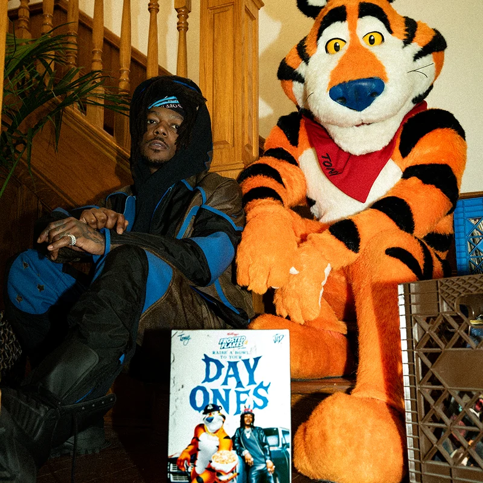
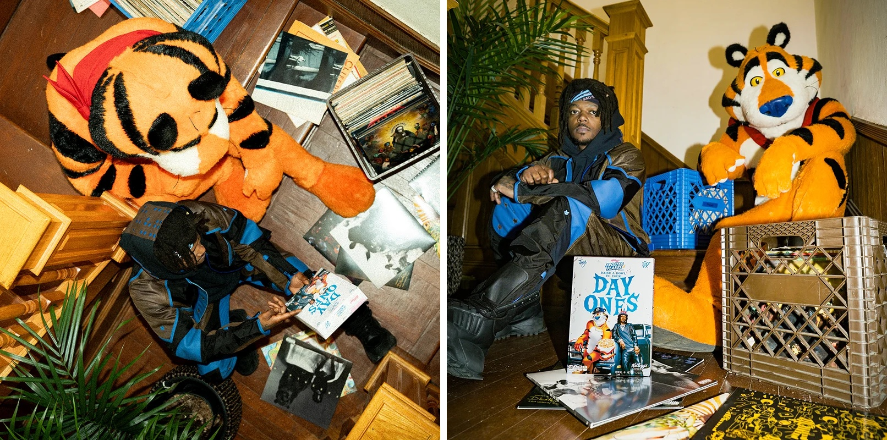
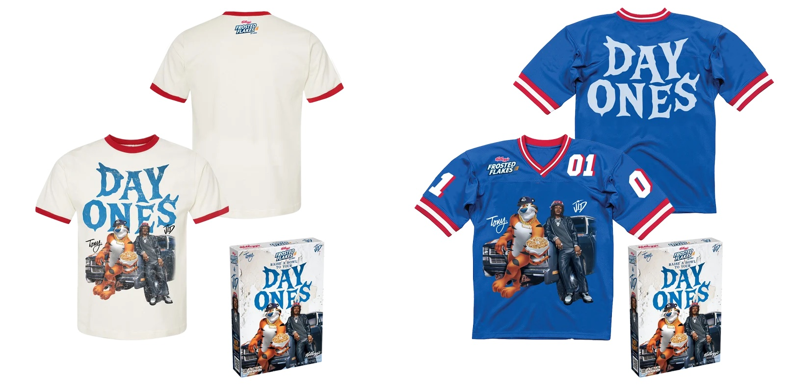

Creative Direction / Brand Collaboration
J.I.D × Kellogg's
About the project
Design for the "Day Ones" collaboration between J.I.D and Kellogg's Frosted Flakes: a campaign shot at home with Tony the Tiger, a limited-edition cereal box, and a ringer tee bundle.
PAZL® curates collaborations between brands to create products that authentically connect with both audiences.



Credits
- Design
- Fred Saint Foster / PAZL®
- Artist
- J.I.D
- Brand
- Kellogg's Frosted Flakes